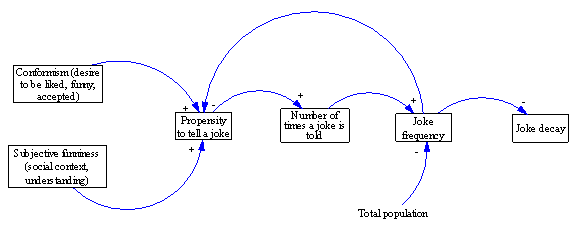
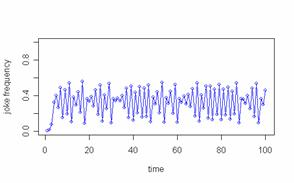
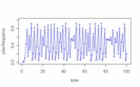
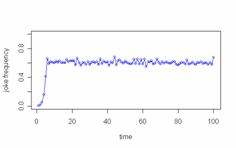
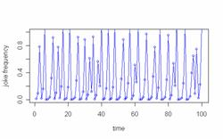
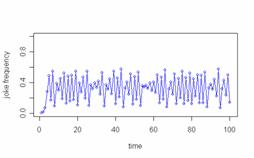
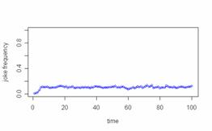
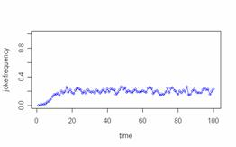

Agent-Based Joke Modeling:
Why do some persist while others decay?
|
Joslyn Barnhart joslyn_b@yahoo.com Department of Political Science, UCLA |
Sasha Romanosky sromanos@cmu.edu Heinz College of Information Systems and Public
Policy, Carnegie Mellon University |
|
|
2010 Graduate Workshop in Computational Social
Science, Santa Fe Institute |
||
Motivation
In thinking about what affects the decay and persistence of jokes over time, we started by considering the social function of jokes, which is to facilitate the formation of connections with others. In this, their function is similar to gossip, storytelling, slang, and particular hand gestures. But in addition to facilitating connections, these forms of communication are also used to create distinctions between groups. Slang, for instance, is often used as a marker or identifier for a particular group. If an original expression spreads to other groups, it is no longer useful as a unique identifier for the original group. The same could be said of jokes among certain groups, particularly among children and younger adults, in which a desire to conform and concern about over-conformism often coincide.
You might tell a joke because you want to emulate a more prestigious member of your community, but once enough people tell the joke, it is no longer a prestigious symbol. In this way, our model treats jokes more as fashion statements. A desire to conform and be liked is balanced with a desire to be unique within a smaller group. The overall popularity of the joke will therefore affect the likelihood of persistence of decay of the joke over time.
A Simple Agent-Based
Joke Model
Our model attempts to study the lifespan of a single joke within a population of 5000 agents. In the initial period, five agents are randomly assigned a joke. In each subsequent time period, each agent who has heard the joke computes her propensity to retell the joke to a proportion of the people in her network. The number of people in her network was drawn from a normal distribution in each period.
Her individual propensity to retell the joke is a function of the agent’s degree of conformism, how funny she thinks the joke is (the jokes subjective funniness), and the overall popularity of the joke. With the degree of conformism, we try to capture the tradeoff between the degree to which a person is sociable and desires to be liked by doing what others are doing and their desire to distinguish themselves from the masses. This value was drawn from a normal distribution for each individual in the initial period. The subjective funniness of the joke depends on how well the receiver understood the joke as well as the social context of the joke, by which we mean whether the joke can be appreciated according to current social norms and tastes.
Finally, the overall popularity of the joke is measured by the number of times the joke was told by members of a population in the last time period (the joke frequency). If this frequency in the last round is greater than an individual’s conformity threshold, she will not retell the joke in the current period. Otherwise, she will retell the joke. These relationships are represented in Figure 1 below.

Figure 1: Causal diagram of joke decay
The diagram illustrates the causal flow using a simplified systems dynamics diagram and can be read from left to right. The “+, -“ signs next to each arrow represent the correlations between objects. For instance, as explained above, as the agent’s conformism or subjective funniness increases, so will her propensity to tell a joke. Next, as the agent’s propensity to tell a joke increases, so will the number of times a joke is told by the agent. Similarly, as the number of times a joke is told increases, so will the joke frequency, which, in turn, decreases the joke decay.
The concept of adaptation is captured by the feedback from joke frequency to propensity to tell a joke and consequently, as the joke frequency increases, one’s propensity to tell a joke decreases.
Results and
Sensitivity Analysis
Below, we provide a description of our initial results then we perform simple sensitivity analysis to better understand how the joke decay is affected by the agent’s behavior.
The code for this model was implemented using the
statistical package, R. We set initial agent population size to 5000 and the
number of agents first assigned a joke to 5 (making an initial joke frequency
of 5/5000 = 0.1%) and ran the simulation over 100 periods.
We began by considering a “medium” level of conformism and subjective funniness by drawing each from normal distributions, N~(0.5, 0.2), and plotting the joke decay as shown in Figure 2.

Figure 2: Joke decay over time (1)
First, we notice how the joke frequency increases very quickly – within just a few periods -- from 0.1% to just under 40%. Over the 100 trials, the joke frequency then exhibits wide fluctuations ranging from 10% to over 50% with short periods of very small fluctuations (30%-40%). Despite the wide variance, the mean joke frequency appears relatively stable. Sample mean and standard deviations of joke frequency were 0.32 and 0.152, respectively. Naturally, these values were highly sensitive to the conformism and subjective funniness distributions as shown below in Figure 3
 
Figure 3: Manipulation of Conformity mean and variance
The left panel was produced by simulating an increase in the mean level of the agent’s conformity ~ N(0.8, 0.2), while the right panel was simulates an increase in the variation (social ambiguity or uncertainty) the agent might experience in her conformity ~ N(0.5, 1). For instance, consider that the agent is dropping into a new social environment and considering whether or not to tell a joke. Both panels are shown on the same scale.
Clearly, manipulation of the mean (increase from 0.5 to 0.8) substantially alters the oscillation of joke frequency (ranging from close to zero to about 1), while an increase from 0.2 to 1.0 of the standard deviation slightly increases the mean joke frequency, but drastically reduces the variation around the mean.
Sample mean and standard deviations of joke frequency in the left panel were 0.43 and 0.31, respectively,
while the sample mean and standard deviations of joke frequency in the right panel were 0.58 and 0.11, respectively.
Next, we consider the effect of the joke teller’s network size on the joke decay as shown in Figure 4.
 
Figure 4: Manipulation of Network Size (mean and variance)
The left panel increases an agent’s mean network size from 5 to 10, while the right panel increases the standard deviation from 2 to 4 (doubling both parameters). As we can see, relative to the baseline in Figure 2, doubling the mean increases the variance of joke frequency substantially, while doubling the standard deviation appears to have little effect overall.
Next, we consider the effect of drawing from different probability distributions. Given that power law distributions are often a sign of complex adaptive systems, next, we briefly explore the effect of drawing conformism and network size from a power law (weibull distribution, shape = 0.5 and scale = 1.0) as shown in Figure 5.
 
Figure 5: Exploring power law
The left panel illustrates the effect of drawing conformity from the weibull distribution (scaling the draw by 10) while the right panel illustrates the effect of drawing network size from the weibull distribution. In both cases, we see a drastic reduction in the mean and variance of joke frequency (e.g. mean = 0.11, stdev = 0.02 in left panel and mean = 0.18 and stdev = 0.054 in the right panel). Notice that unlike the manipulation of the normal distribution (Figure 3 and Figure 4), the mean joke frequency has decreased by much greater proportion, relative to Figure 5.
We also explored the effect of initial conditions on the outcome of joke frequency. We found the model to be remarkably robust to any changes in initial conditions. As shown, when the initial joke popularity is small, the equilibrium is obtained within only a few time periods – not enough agents know of the joke and so it is told more. Conversely, if too many agents know of the joke, then fewer (if any) agents will tell the joke, reducing its popularity, and obtaining equilibrium. Even with moderately high initial popularity, the model is highly self-correcting and obtains an equilibrium as expected.
Decay
Importantly, in all cases, the model does not exhibit prolonged joke decay, which is clearly a limitation of the model – or at least, an unexpected outcome. Instead, we observe ‘decay’ as oscillation of the joke frequency over very small time periods (1-2).
In order to more realistically model decay, we would likely need to introduce a more persistent temporal force to simulate gradual deterioration of the popularity of the joke.
Conclusion
In summary, the simple model presented here illustrates agent adaptation through the feedback (adjustment) of one’s propensity to tell a joke as a function of the overall joke frequency. Moreover, agent-based modeling is implemented as each joke teller (the agent) uniquely determines her network size each time period.
We found that manipulation of the mean of the input distributions (conformism and subjective funniness) resulted in large variation of the joke frequency, while manipulation of
the standard deviation produced a much tighter variation of joke frequency. Comparative statics
using a power law distribution (for either conformity
or network size) resulted in a large
reduction in both mean and variance of the joke frequency. Finally, the model
was found to be remarkably robust to initial joke frequency.
Extensions
We were intrigued by many possible extensions to the model. In particular, we would like to explore different categories of jokes (jokes based on stereotypes, generic jokes, dirty jokes, etc.) behave differently over time. These categories of jokes may differ in how context dependent they are and likely the degree to which they decay over time. Some may address deeper universal truths while others require contextual knowledge for comprehension. Some jokes may appeal more to specific groups within populations and may persist at low levels within those groups while other jokes may appeal to broader swaths of people across age groups and races.
Additionally, we would like to examine further the effect of a joke’s characteristics on its persistence. People may be more apt to remember shorter jokes or jokes with certain phonetic characteristics. We would also like to explore the effect of temporal shocks on jokes. By shocks, we mean dramatic events that would render the joke less appropriate for a certain period of time.
{kind=link}